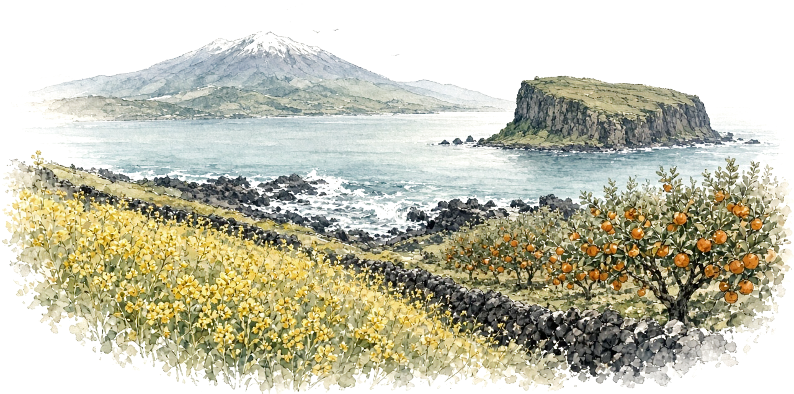

TRAVEL JOURNAL
2026
— 24 —
No. 06 · JEJU ISLAND · KOREA
JEJU
Wind, stone and tangerines.
33°29′N · 126°31′E
· black stone, white surf
· green paths by the sea
· a wall that said YES
KOREA
₩ 430
JEJU ISLAND
KOREA · 2026
★
★

— 25 —
black sand
济州岛
제주
BOARDING PASS · FLIGHT
SEOUL
→
JEJU
CLASS
Y
SEAT
23C
YEAR
2026
No.
KR0626
black stone, white surf